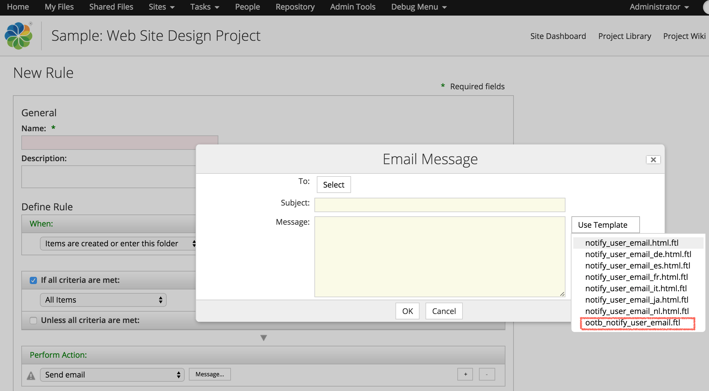

If you look into the Email Form while setting an “Send Email” Action on a folder you would be wondering how we can add new email templates into the list of drop down “Use Template” as shown below -

The only option without any customization is to add your templates into the folder : Repository > Data Dictionary > Email Templates > Notify Email Templates
How does this work?
Look for the bean ‘ac-email-templates’ in alfresco/WEB-INF/classes/alfresco/action-services-context.xml which has the definition as below -
The property searchPath is what restricts it from fetching templates from a single folder.
What we need to change?
Let’s bring in our changes so that we can have multiple folders to select the templates from. For this we will be overriding the bean as below -
The first change is converting the property searchPath from a String literal to a List.
|
|
Then update the getAllowableValuesImpl() method so that it parses each folder path to search for what files to be included in the dropdown.
|
|
I have also added an extra method sortByName so that the values in the dropdown are displayed in sorted order by their name.
Checkout the code for FolderContentsParameterConstraint for a better understanding of how it works.
I made this whole project as 2 step -
- First is bootstrapping a template under a specified path. v1.0
- Make the templates available for selection under Email Action. v2.0
The source code for this project lives here